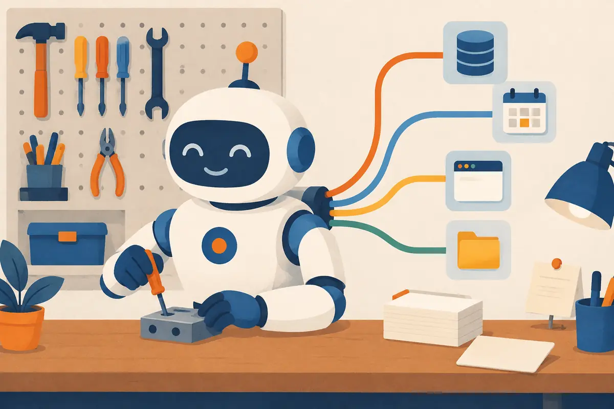

Where to use what: the agent toolkit on one page
RAG, MCP, Agent Skills, AGENTS.md, memory, subagents, hooks… The words pile up fast. This lesson puts every building block on one page, says in plain words what each one is for, and gives you a map for choosing. Start here, even if you have only ever used a chatbot.

By the end you can
- Say in one sentence, with an everyday picture, what each agent building block does: system prompt, context window, RAG, fine-tuning, tools, MCP, skills, rules files, memory, the LLM wiki, subagents, A2A, hooks, guardrails and evals.
- Use a one-page map to pick the right building block for a goal.
- Spot three common mistakes, such as writing a prompt where you need a hook.
Take your best guess. A wrong guess now makes the right answer stick later.
Your coding agent sometimes forgets to run the tests before it says “done”. Which fix makes the tests run every single time?
- Add “ALWAYS RUN THE TESTS!!” in capitals to the prompt
- A hook: a small script the agent's software runs automatically at that moment
- Fine-tune the model on examples of running tests
- Switch to a model with a bigger context window
A support bot must answer questions from 2,000 help-centre articles that change every week. What fits best?
- Look up the few relevant articles when each question arrives, and give only those to the model
- Fine-tune the model on all the articles every week
- Paste all 2,000 articles into the system prompt
- Nothing: the model already knows them
From chatbot to agent: why there are so many pieces
When ChatGPT arrived in late 2022, using an AI model at work meant copy and paste: you pasted text in, the model wrote something, you pasted the answer somewhere else. The model knew only two things: what it had learned in training, and what you had just pasted.
To do real work, it needed more. It needed your facts (today's prices, your refund policy), your rules (“we use tabs”, “never touch the billing code”), your tools (GitHub, a database, a calendar) and a way to act, not just talk. Each need got its own fix, and most arrived within three years:
- 2023: retrieval-augmented generation (RAG, first described by Lewis et al., 2020) went mainstream, and OpenAI added function calling to its API (June 2023), letting a model ask your code to run a function.
- Nov 2024: Anthropic released the Model Context Protocol (MCP), one standard plug for connecting tools.
- 2025: AGENTS.md became a shared name for a project's rules file; Google launched the A2A protocol for agents to talk to each other (April); Anthropic introduced Agent Skills (October) and published them as an open standard (December).
- Dec 2025: MCP and AGENTS.md moved, with Block's goose agent, to a neutral home: the Linux Foundation's new Agentic AI Foundation.
- 2026: the LLM wiki, a knowledge base an AI writes and keeps up to date, spread after Andrej Karpathy described his setup in April.
An agent is a model running in a loop: it reads, decides, uses a tool, looks at the result, and repeats until the job is done (SY.5 covers the loop). Coding agents such as Claude Code, OpenAI Codex, Cursor, Gemini CLI or GitHub Copilot are the best-known examples, but support bots and research assistants work the same way.
Hold on to one idea for this whole module: in the moment it answers, everything a model knows is text in its context window. Almost every building block is a different way to get the right text in at the right time. The rest do things outside the model.
The blocks that decide what the model reads
| Building block | What it is | Everyday picture |
|---|---|---|
| Prompt & system prompt | Your message, plus standing instructions the app adds before it (“You are a support agent for…”). | A question, plus the job description pinned above the desk. |
| Context window | Everything the model can see in one go, measured in tokens (word pieces). Fixed size; all the blocks below compete for it (AG.2). | The desk itself: only what's on it can be used. |
| RAG (retrieval) | Search your documents when a question comes in, and paste just the relevant passages into the context (SY.3). | A librarian who fetches the three pages you need. |
| LLM wiki | A set of linked notes that an AI writes from your sources and keeps up to date, so knowledge is summarised once and reused (AG.6). | A well-kept team notebook, instead of re-reading every file. |
| Rules file (AGENTS.md, CLAUDE.md…) | A plain text file in your project that the agent reads at the start of every session: commands, conventions, don'ts (AG.5). | The house rules taped to the fridge. |
| Memory | Notes the agent saves and reads back next session, so it doesn't start from zero (AG.5). | A diary you read each morning. |
| Fine-tuning | Training the model's weights further on your examples, changing its built-in habits (M3.7, SY.6). | Months of practice that change how someone writes, not a note they read. |
Which building block changes the model itself, rather than what it reads?
- A rules file
- RAG
- Fine-tuning
- A system prompt
What the model can do: tools, skills, teams and safety rails
Reading is half the story. An agent also does things, and it needs know-how, helpers and limits. Here is the second half of the kit.
| Building block | What it is | Everyday picture |
|---|---|---|
| Tool / function calling | The model writes a structured request (“call get_order with id A17”); your code runs it and returns the result (SY.4). | Asking a colleague to look something up for you. |
| MCP server | A small program that offers tools (and data) through one standard protocol, so any MCP-aware app can use them (AG.3). | A USB-C port: one plug shape for every device. |
| Agent Skill | A folder with a SKILL.md of instructions (plus optional scripts and files) that loads only when a task needs it (AG.4). | A recipe card you pull from the box only when you cook that dish. |
| Subagent | A helper agent with its own fresh context window; it does one part and hands back a short summary (AG.7). | Sending an intern to research one question and report back in a paragraph. |
| Multi-agent & A2A | Several agents working together; A2A (Agent2Agent) is an open protocol so agents built by different teams or vendors can talk (AG.7). | Two companies' staff using a shared phone line and form. |
| Hooks | Your own scripts that the agent software runs automatically at set moments (before a command, after an edit), whatever the model decides (AG.7). | A door that locks itself, instead of a sign saying “please lock”. |
| Guardrails & evals | Guardrails check inputs and outputs in production (SY.7); evals are test sets that measure whether a change made the agent better (M4.7). | A seatbelt, and a driving test. |
Watch them work together. Below, one request travels through a coding agent: a rules file and skill names are loaded, you ask for something, a skill is pulled in, a tool is called through MCP, and the answer comes back.
Notice what didn't happen: the other two skills never loaded, and nobody pasted anything. The agent pulled in exactly what this task needed. That habit, putting the right text in the window at the right time, is called context engineering, and it is the subject of AG.2.
In the animation, why did only the release-notes skill's full instructions enter the context window?
- The other skills were broken
- The rules file banned the other skills
- The MCP server chose the skill
- Its short description matched the request, so the agent loaded just that one; the rest stayed as one-line descriptions
The map: where to use what
Here is the whole module on one page. Find the row that sounds like your problem, read across, and follow the link. The second half of the module (AG.8) ends with the same map.
| I want the agent to… | Use | Example |
|---|---|---|
| Know facts from our documents | Retrieval / RAG (SY.3). For a small, evolving body of knowledge you want summarised and cross-linked once: an LLM wiki (AG.6) | A support bot that needs your refund policy |
| Follow our project's conventions every single time | A rules file: AGENTS.md, CLAUDE.md and similar (AG.5) | A coding agent in a monorepo that must use pnpm, not npm |
| Follow a repeatable procedure, or use specialist know-how, only sometimes | An Agent Skill (AG.4) | “Make a slide deck our way”, “review a contract with our checklist” |
| Read from or act on an outside system | A tool. Reusable across many apps and agents: an MCP server (AG.3). A one-off inside your own app: plain function calling (SY.4) | Look up an order in the database; post to Slack; book a meeting |
| Handle a big task with separable parts, or stop the context overflowing | Subagents (AG.7) | Research five competitors in parallel, one helper each |
| Cooperate with agents built by other teams or vendors | A2A (AG.7) | Your travel agent asks an airline's booking agent for seats |
| Make something happen no matter what the model decides | Deterministic code or hooks, not a prompt (AG.7) | Always run the formatter; block rm -rf |
| Remember things across sessions | Memory files (AG.5) or a wiki (AG.6) | “Last time we decided to drop Python 3.9 support” |
| Change the model's built-in behaviour, style or cost at scale | Fine-tuning (SY.6, M3.7) | A small, cheap model that writes in your brand voice for millions of replies |
| Fit all of the above into one window | Context engineering (AG.2) | Everything above competes for the same limited space |
A useful shortcut: ask whether your need is knowledge (RAG, wiki), a convention (rules file), a procedure (skill), a connection (tool or MCP), a guarantee (hook), memory (memory files) or a new habit for the model itself (fine-tuning). Most real agents combine several.
Playground: what are you trying to do?
Pick a goal. The building blocks that fit light up around the model.
Explain like I'm 5
You are building a birdhouse, and you have a toolbox. The hammer is for nails. The screwdriver is for screws. The measuring tape tells you how long to cut the wood. The paintbrush makes it pretty. The flashlight helps you see inside.
Each tool is good at one job. If you try to hammer in a screw, it goes badly, even though a hammer is a great tool. Building with AI is the same: pick the tool that matches the job.
Where it breaks: real tools don't share anything, but every AI building block shares one small workbench, the context window. Bring too many onto it at once and the work gets worse.
Every engineer on your team wants the coding agent to know: “run make test before committing, and never edit files in generated/.” What fits best?
- An Agent Skill
- A rules file such as AGENTS.md
- An MCP server
- Fine-tuning
Three common mistakes (and a quieter fourth)
Most early agent projects stumble in the same few places. All three come from using a good tool for the wrong job.
1. Stuffing everything into the system prompt. It starts small: a paragraph of instructions. Then the refund policy goes in, then the style guide, then 40 example answers, then every tool you might ever need. Soon the prompt is tens of thousands of tokens, each request costs more, and the model starts missing instructions buried in the middle (you will see why in AG.2). Instead: keep standing instructions short; fetch documents with retrieval when a question needs them; move occasional procedures into skills.
2. Building an MCP server for something a rules file would solve. A team wants the agent to “know our build commands”, so it builds a server with a get_build_commands tool. Now there is a program to host, secure and update, and the agent has to remember to call it. Three lines in AGENTS.md would do the same job, always present and free. Rule of thumb: MCP is for live systems the agent must read or change (databases, tickets, calendars), not for facts that fit on an index card.
3. Using a prompt where a hook is needed. “NEVER run git push --force” in a prompt works most of the time. Most of the time is not good enough for a destructive action, and text the agent reads (a web page, a tool result) can even trick it into ignoring instructions. Instead: enforce it in code, with a hook or a permission setting that blocks the command, and keep the prompt for things where “usually” is fine.
A fourth, quieter one: fine-tuning to teach facts. Training is slow and costly, and models don't reliably memorise exact facts from a little extra data. Use retrieval for facts and fine-tuning for habits.
CLAUDE.md. One rule reads “no overlapping or clipped text, ever”. But the team doesn't trust the rule alone: a layout-checking script runs automatically on every change and fails the build if two labels collide. Rule for the agent, code for the guarantee. That pairing is the pattern to copy.A team adds “NEVER delete the production database” to its agent's prompt. What is the main problem?
- A prompt makes the right behaviour likely, not certain; a destructive action needs a block in code (a hook or permission rule)
- The sentence is too short for the model to notice
- Prompts cannot contain the word “never”
- Nothing; a clear prompt is a guarantee
A friend is building a coding agent for their company. Explain the difference between a rules file, an Agent Skill and an MCP server, with one example of each.
Your company has 30 internal tools (tickets, CRM, wiki, deploys) and wants three different AI apps to use all of them. What should you build?
- Separate function-calling code for each tool inside each app: 90 integrations
- One giant system prompt describing the tools
- MCP servers for the tools, so every MCP-aware app can use each one
- A fine-tuned model that knows the tools
The agent's context window keeps overflowing while it researches a large codebase. Which fix targets that directly?
- Add more rules to AGENTS.md
- Hand parts of the search to subagents, each with its own window, and keep their short summaries
- Install more skills
- Fine-tune the model on the codebase
Connect to M3.1 and M3.7: why is fine-tuning (for example with LoRA) a poor way to keep a bot up to date with this week's prices?
- Fine-tuning can only change a model's tone
- LoRA adapters cannot be trained on text
- Fine-tuning deletes the model's previous knowledge
- It changes weights through training on examples, which is slow to repeat and doesn't reliably store exact, changing facts; retrieval reads the current price at question time
Which pairing is wrong?
- “Remember what we decided last week” → fine-tuning
- “Answer from our product manuals” → RAG
- “Always format code before committing” → a hook
- “Review contracts with our checklist, when asked” → an Agent Skill
Key takeaways
- In the moment it answers, a model knows only what is in its context window; most building blocks are ways to put the right text there at the right time.
- Knowledge → RAG or an LLM wiki. Conventions → a rules file. Occasional procedures → Agent Skills. Connections → tools, shared via MCP.
- Big or messy tasks → subagents. Guarantees → hooks and code, not prompts. Memory → notes the agent writes and reads back.
- Fine-tuning changes habits, style and cost at scale; it is the wrong tool for facts that change.
- Real agents combine several blocks. The skill is matching each need to the right one.
Adding cards schedules your first spaced review.